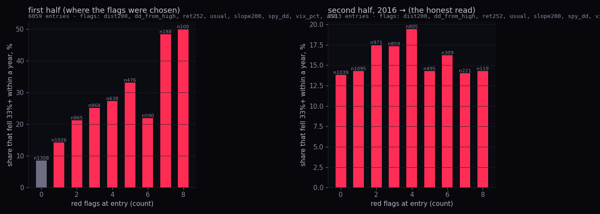
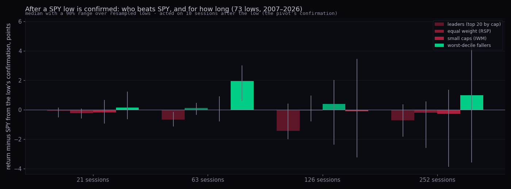
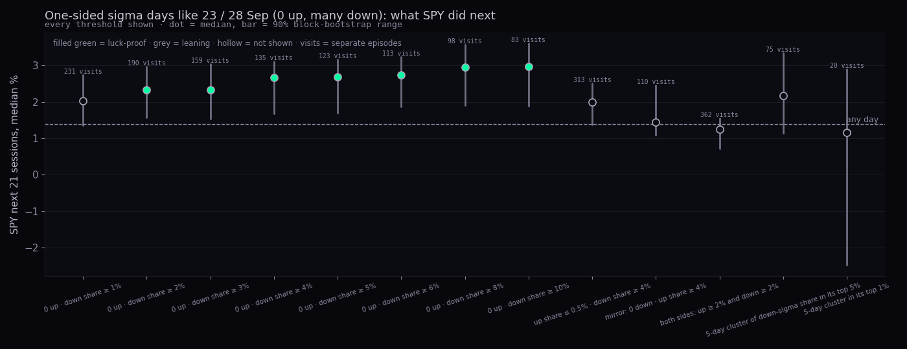

"Old" is the published number, on today's names. "New" is the same number on the point-in-time universe. The verdict is one of three words: holds (same reading, within its own range), small correction (same direction, a different size or a different status word), reversed (the reading changes sign or the claim no longer stands).
| study | the published reading | old | new | verdict | where |
|---|---|---|---|---|---|
| Stats 3 §1d | size tranches: mega caps beat SPY, small caps doomed | +1.01 / −15.43 pts vs SPY | −0.80 / +1.74 | reversed | N9, 28 Sep · point-in-time page §4 |
| Stats 3 §3 | below a falling 200-day: the one-in-ten line and the 33% tail | -43.4% · 16.7% fell 33%+ | -45.2% · 18.4% | small correction | below |
| Stats 3 §3a | what marks the one-in-ten at entry (wide usual day, deep fall, falling faster, weak market) | usual day 0.5 → 0.71 | 0.65 | holds | below |
| Stats 3 §3b | the flag count carries out of sample (no flag ≈ ordinary; 4–5 flags ≈ 1 in 5) | 7.3% → 21.3% | 13.8% → 19.4% | reversed | below |
| Stats 3 §3c | small caps in the state fell 33%+ two times in three | 64.3% | 26.1% | reversed | below |
| Stats 3 §3c | entries with SPY below its 200-day carry the fatter tail | 14.5% vs 20.1% | 16.2% vs 22.2% | holds | below |
| Stats 3 §3d | being in the state does not disqualify a name from winning that year | 11.9% vs 10.2% any | 11.9% vs 10.1% | holds | below |
| Stats 3 §3d | last year's winners win again at twice the base rate | 20.1% (×2.0) | 15.5% (×1.5) | small correction | below |
| Stats 3 §4 | leaders trail SPY for a quarter after a confirmed low | −0.42 pts · p 0.06 | −0.67 · p 0.01 | holds | below |
| Stats 3 §4 | …and are level with SPY by the year | +0.02 pts | −0.71 (range crosses zero) | small correction | below |
| Stats 3 §4 | why: the worst-decile fallers beat SPY for a year (+3.4 → +11.7 pts) | +3.43 / +11.67 pts | +1.94 / +0.98 | reversed | below |
| Stats 3 §4a | a small sleeve of the beaten names for a quarter beats holding (luck-proof) | +0.98 pts · luck-proof | +0.63 · leaning | small correction | below |
| Stats 3 §4a | moving to equal weight after a low is a wash | not shown | not shown | holds | below |
| Stats 3 §4b | the leaders wing carries the return and the shallower worst fall | 9.5% a year · worst -55.2% | 9.0% · -60.9% | small correction | below |
| Stats 3 §5a | the down-share ladder carries no rung worth acting on | 1 of 11 rungs clear | 0 of 11 | holds | below |
| Stats 3 §5b | a one-sided sell day (no up-sigma, many down) says little about the next month | 0 of 8 thresholds clear · +1.61% | 7 of 8 clear · +2.67% | small correction | below |
| Stats 3 §5b | …but more sigma days follow (clustering) | 13.7% vs 10.5% | 14.8% vs 10.2% | holds | below |
| Stats 3 §5c | a name's own sigma day is not a trigger (leaders' rows carry nothing) | −0.19 pts · not shown | −0.23 · not shown | holds | below |
| Stats 3 §5c | by size: mega caps' sigma days lead, small caps' lag (luck-proof both) | +0.47 / −6.95 pts | +0.01 / +0.48 | reversed | below |
| Leaders §1 | top-10 share of an up year's gain, before 2020 (a floor) | at least 33.9% | 36.1% | small correction | N9 · point-in-time page §2 |
| Leaders §2 | leaders looked no different on the chart beforehand | RS +2.7 vs +2.3 | +2.4 vs +0.3 | small correction | N9 · point-in-time page §3 |
| Leaders §2 | growth: a growing top line lifted the chance of leading by under 2.5 points | 18.6% → 20.6% (113 survivors) | 3.9% → 5.1% (every member) | holds | below |
| Leaders §3 | one calm name after a big swing: a little less pain, a little less return | −2.4 pts at a year | −3.7 pts | small correction | below |
| Leaders §3 | spreading across all calm names halves the pain and costs a little | worst -10.4% vs -20.5% · −0.98 pts | -10.1% vs -20.9% · −2.64 pts | holds | below |
| Leaders §3 | after the very biggest swings holding did better (momentum persisted) | −3.51 pts for the basket | −6.88 pts | holds | below |
| Playbook §4 | laddering never beat buying at once; smaller worst loss on shallow pullbacks | 24 of 180 comparisons clear | 28 of 180 | small correction | N9 · point-in-time page §5 |
What held, in one breath. The one-in-ten line under a falling 200-day and what marks it at entry; that the state does not disqualify a name from winning its year; that leaders trail SPY for a quarter after a low and that moving to equal weight is a wash; that a one-sided sigma day is followed by more sigma days; that a name's own sigma day is not a trigger; and the whole rotation study (spreading the money halves the pain and costs a little, one calm name is a little less of both, holding wins after the very biggest swings). Two readings got stronger: leaders' lag after lows (p 0.06 → 0.01) and the strict one-sided sell day (no member up beyond its usual day, 2% or more down), which now clears the false-discovery check at every threshold with SPY +2.34% to +2.97% over the next month against +1.40% on any day; on the Hub's own served-name count it did not.
Same method: the state, the entry rule (a re-entry inside 21 sessions is the same episode), the thirteen characteristics, the bad decile, the rank test with its episode resampling and false-discovery check, the walk-forward split at 2016, the year rows. Three changes: every S&P member since 2003 on its member days (871 names, 11,972 entries; old 390 names, 6,714); typed by the cap on the day; 415 names that stopped trading are scored to their last close. The market columns (SPY's fall, the VIX, the share above the 50-day) are the same panel.
| old (today's names) | new (point-in-time) | verdict | |
|---|---|---|---|
| entries · names · years | 6,714 · 390 · 2004–2025 | 11,972 · 871 · 2004–2026 | |
| one in ten: worst close within 252 sessions | -43.4% | -45.2% | small correction |
| fell 33%+ within a year · within 126 sessions | 16.7% · 9.7% | 18.4% · 9.6% | small correction |
| median worst fall in a year · next-year return | -11.6% · +12.3% | -12.8% · +8.1% | small correction |
| reclaimed the 200-day within a year | 97.5% | 96.0% | holds |
What changed. The tail is a little fatter and the next year a good deal poorer (+12.3% → +8.1%), which is what the stats 3 page predicted when it wrote "the bad-decile line is if anything too kind". The names that were left out are the ones that fell and never came back.
| characteristic at entry | old: chance a bad entry has the higher value · status | new · status | new medians: bad decile vs the rest |
|---|---|---|---|
| distance below the 200-day at entry, % | 0.43 luck-proof | 0.46 0.44 to 0.47 luck-proof | -4.60 vs -4.03 |
| fall from the 252-day high, % | 0.33 luck-proof | 0.36 0.35 to 0.38 luck-proof | -23.46 vs -18.43 |
| the 63 sessions before, % | 0.46 luck-proof | 0.48 0.47 to 0.50 leaning | -4.78 vs -4.23 |
| the year before, % | 0.44 luck-proof | 0.42 0.41 to 0.44 luck-proof | -9.24 vs -4.59 |
| RSI own percentile | 0.51 not shown | 0.50 0.49 to 0.52 not shown | 31.27 vs 31.08 |
| sessions already below the 200-day | 0.48 not shown | 0.48 0.46 to 0.50 luck-proof | 9.00 vs 12.00 |
| usual day (60-day spread of moves), % | 0.71 luck-proof | 0.65 0.64 to 0.67 luck-proof | 2.25 vs 1.76 |
| volume vs its 50-day | 0.50 not shown | 0.53 0.51 to 0.54 luck-proof | 1.02 vs 0.98 |
| 200-day slope over 20 sessions, % | 0.40 luck-proof | 0.42 0.41 to 0.44 luck-proof | -0.66 vs -0.35 |
| distance from the 50-day, % | 0.48 not shown | 0.49 0.47 to 0.51 not shown | -1.84 vs -1.73 |
| SPY's fall from its high that day, % | 0.43 luck-proof | 0.44 0.42 to 0.46 luck-proof | -6.75 vs -4.24 |
| VIX own percentile that day | 0.56 luck-proof | 0.56 0.54 to 0.57 luck-proof | 63.14 vs 51.20 |
| share of names above the 50-day that day, % | 0.47 luck-proof | 0.46 0.44 to 0.47 luck-proof | 51.84 vs 57.47 |
Verdict: holds. The same marks, in the same order: the wide usual day is still the strongest single number (0.71 → 0.65), then the deep fall from the high, the prior year, the faster-falling 200-day and the market (SPY's own fall, the VIX, breadth). RSI's percentile and the distance from the 50-day still say nothing. Two small numbers newly clear the check (sessions already below, volume) at 0.48 and 0.53: too close to 0.5 to use.

| flags at entry | old · 2016 →: fell 33%+ (n) | new · 2016 →: fell 33%+ (n) | new · worst fall, median | new · next year, median |
|---|---|---|---|---|
| 0 | 7.3% (740) | 13.8% (1039) | -12.1% | +4.2% |
| 1 | 10.8% (730) | 14.3% (1095) | -12.9% | +6.2% |
| 2 | 16.3% (661) | 17.5% (971) | -15.0% | +5.5% |
| 3 | 16.0% (618) | 17.3% (859) | -14.7% | +8.7% |
| 4 | 21.3% (478) | 19.4% (805) | -14.2% | +8.8% |
| 5 | 19.4% (299) | 14.3% (495) | -12.0% | +17.5% |
| 6 | 9.2% (163) | 16.2% (309) | -11.9% | +20.5% |
| 7 | 17.0% (88) | 14.0% (221) | -11.2% | +39.1% |
| 8 | — | 14.3% (119) | -10.7% | +70.1% |
Flags chosen on 2004–2015 entries, new run: distance below the 200-day at entry, % at or below -7.98; fall from the 252-day high, % at or below -23.23; the year before, % at or below -9.66; usual day (60-day spread of moves), % at or above 2.20; 200-day slope over 20 sessions, % at or below -0.79; SPY's fall from its high that day, % at or below -9.05; VIX own percentile that day at or above 76.62; share of names above the 50-day that day, % at or below 38.31. Old run: seven flags (the same list without the distance below the 200-day).
Verdict: reversed. On the half where nothing was chosen, the share that fell 33%+ runs 13.8% with no flag, 19.4% with four, and back to 14.3%–14.3% with five to eight. The old page read 7.3% → 21.3% and called it "the flags carry"; on the full record they lean, weakly and not in order. Two things are behind it, both checked on the 2016 → entries: the members still trading today show almost no gradient (11.8% with no flag, 13.9% with four), and the 1,165 entries from names that later left the index fell 33%+ 29.2% of the time at every flag count (24.5% with none). The flags were chosen on, and sorted, the Hub's served list — a smaller, more volatile set — not the index's members. What to keep: the marks in 1a, read one by one. What to drop: the count-of-flags rule for the scout tier.
| group | old: entries · in the bad decile · fell 33%+ | new: entries · in the bad decile (90% range) · fell 33%+ | new: worst fall · next year (medians) |
|---|---|---|---|
| mega cap (>200bn) | 1172 · 8.5% · 14.2% | 305 · 9.2% 6.6 to 11.8 · 13.8% | -11.0% · +7.2% |
| large cap (10–200bn) | 4163 · 9.5% · 16.6% | 7476 · 8.3% 7.8 to 8.8 · 16.4% | -12.7% · +7.9% |
| mid cap (2–10bn) | 326 · 24.8% · 37.4% | 3260 · 13.1% 12.1 to 14.1 · 22.4% | -13.4% · +9.0% |
| small cap (<2bn) | 70 · 45.7% · 64.3% | 238 · 17.6% 13.8 to 21.8 · 26.1% | -15.4% · +7.4% |
| SPY above its 200-day | 4023 · 7.8% · 14.5% | 7538 · 7.9% 7.4 to 8.4 · 16.2% | -12.2% · +7.1% |
| SPY below its 200-day | 2691 · 13.3% · 20.1% | 4434 · 13.6% 12.8 to 14.4 · 22.2% | -14.0% · +9.8% |
Verdict: tranches reversed, market state holds. Typed by the size on the day, the tail runs 13.8% (mega) → 16.4% → 22.4% → 26.1% (small): smaller is still worse, mildly, instead of "two in three of the small caps". The mega tranche has only 305 entries because $200bn was rare before 2015. The market split is the one that holds as written: 22.2% with SPY below its 200-day against 16.2% above. Sectors (today's FMP sector for the names that still have a profile; names without one are not in the sector rows) keep their order — staples and utilities the quietest (7.0%, 7.8%), energy and financials the worst (19.0%, 18.7%) — with technology's 24.2% falling to 16.1%.
| question | old · 90% range (n) | new · 90% range (n) | verdict |
|---|---|---|---|
| top-decile winner that year, given in the state on 1 January | 11.9% 10.0 to 13.3 (1363) | 11.9% 10.9 to 12.8 (2706) | holds |
| winner, any name | 10.2% | 10.1% | |
| winner, given a top-decile winner the year before | 20.1% 16.0 to 23.7 (606) | 15.5% 12.2 to 18.7 (1022) | small correction |
| winner, given prior-year winner and not in the state | 20.3% | 15.7% | small correction |
| top-20-by-cap leader, given in the state · any name | 4.0% · 5.7% | 2.2% · 3.5% | holds |
| calendar-year return, median: in the state on 1 Jan · not in the state · all | +15.9% · +10.6% · +11.6% | +9.6% · +7.7% · +8.1% | holds |
| calendar-year return, median: prior-year winner | +15.2% | +8.3% | small correction |
Verdict: holds on the state, small correction on persistence. Being in the state on 1 January still does not lower a name's chance of a top-decile year (11.9% against 10.1%), and its median year is not worse. Last year's winners still win again more often than a random name, but at 1.5× the base rate, not 2.0×: the survivor list kept the winners that kept winning. "Bet on winners, not reversals of losers" stands, with a smaller edge. The pool here is every member on the year's first session (10,734 company-years, old 6,370), so the median year of every group is lower: the old pool's +11.6% for "all names" was itself a survivor's number.
Same method: the 73 SPY swing lows, the confirmation clock, the four horizons, the resampling over lows, the rules and the bow tie. Two changes: the leaders basket is N9's point-in-time one (each year's 20 largest members by full cap on the prior year's last session, every member of the day; AIG in 2007–08, no Berkshire before 2010), and the worst-decile fallers are drawn from the 949 members of the index on the day of the low (old: the served names in today's cache), delisted names and all. SPY, RSP and IWM are untouched, so their rows are identical.

| basket, against SPY from confirmation | 21 sessions · old → new | 63 · old → new | 126 · old → new | 252 · old → new | the fall into the low · old → new |
|---|---|---|---|---|---|
| leaders (top 20 by cap) | −0.16 → −0.07 −0.52 to +0.14 | −0.42 → −0.67 −1.13 to −0.15 | −0.83 → −1.42 −1.99 to +0.43 | +0.02 → −0.71 −1.83 to +0.36 | +0.18 → +0.13 −0.10 to +0.47 |
| worst-decile fallers into the low | +0.93 → +0.14 −0.65 to +1.23 | +3.43 → +1.94 +0.58 to +3.00 | +7.95 → −0.10 −3.24 to +3.44 | +11.67 → +0.98 −3.58 to +5.73 | −13.23 → −11.72 −12.63 to −10.58 |
| old | new | verdict | |
|---|---|---|---|
| leaders vs SPY at 63 sessions · p | −0.42 pts · 0.06 | −0.67 · 0.01 | holds |
| leaders vs SPY by 252 sessions | +0.02 (level) | −0.71 −1.83 to +0.36 | small correction |
| leaders' fall ÷ SPY's fall into the low | 0.96 | 0.97 | holds |
| worst fallers vs SPY at 63 · 126 · 252 | +3.43 · +7.95 · +11.67 | +1.94 · −0.10 · +0.98 | reversed |
| equal weight (RSP) vs SPY at 63 | +0.13 | +0.13 (unchanged) | holds |
| rule, from an all-leaders book at the low's confirmation | old: gain per low · share of lows · status | new: gain per low · 90% range · share of lows · status | verdict |
|---|---|---|---|
| move 25% to the worst-decile fallers for 63 sessions | +0.98 · 67.1% · luck-proof | +0.63 +0.01 to +1.00 · 60.3% · leaning | small correction |
| move 50% to the worst-decile fallers for 63 sessions | +1.97 · 67.1% · luck-proof | +1.26 +0.02 to +2.01 · 60.3% · leaning | small correction |
| move 25% to the worst-decile fallers for 21 sessions | +0.37 · 60.3% · leaning | +0.10 −0.10 to +0.35 · 56.2% · not shown | small correction |
| move 100% to equal weight for 63 sessions | +0.59 · 54.8% · not shown | +1.25 −0.05 to +2.05 · 58.9% · not shown | holds |
| move 100% to equal weight for 126 sessions | +0.76 · 52.1% · not shown | +2.04 −0.87 to +4.18 · 56.2% · not shown | holds |
| leaders share (rest equal weight) | old: yearly return · worst fall | new: yearly return · worst fall |
|---|---|---|
| 100% | 9.5% · -55.2% | 9.0% · -60.9% |
| 75% | 9.2% · -56.2% | 8.8% · -60.5% |
| 50% | 8.8% · -57.3% | 8.5% · -60.1% |
| 25% | 8.4% · -59.0% | 8.2% · -60.4% |
| 0% | 7.9% · -60.9% | 7.9% · -60.9% |
What changed. The leaders' lag over the quarter is clearer (−0.42 → −0.67 points, p 0.06 → 0.01), and by the year they are a little behind rather than level, with a range across zero. The explanation loses most of its size: the beaten names' bounce is +1.94 points for a quarter (was +3.43) and nothing after that (was +7.95 and +11.67). The rules that add a sleeve of the beaten names drop from luck-proof to leaning (+0.98 → +0.63 points per low, 67.1% → 60.3% of lows), which is where the stats 3 page said to re-test them before believing. The bow tie: the leaders wing still carries the return (9.0% against 7.9% for equal weight) but no longer the shallower worst fall (-60.9%, the same as equal weight, because AIG and Citigroup were in the 2008 basket). What did not: equal weight after a low is a wash at every size and length; the lag is not beta (the fall ratio is 0.97).
Same method: the Hub's own test — a day fires when the close-to-close move is 2× the spread of the 60 moves before it and at least 1%, or 8% outright — with the same ladder, thresholds, clusters, trigger cells and date-block resampling. The change: the test is replayed on the point-in-time bars of every S&P member on its member days (922 names, 166,239 events; the Hub's stored table holds 478 served names, 126,589 events), so both the day counts (5a, 5b) and the per-name events (5c) come from the members of the day, typed by the cap of the day. In 2004 the point-in-time count measures 442 names; the Hub's table measured 226, because it only knows today's names.
The two universes are not the same list: the Hub's served names include ETFs and names outside the S&P 500. On 23 Sep the Hub counted 0 up / 25 down of 486 (a down share of 5.14%, its 88th percentile); among S&P members that day it was 0 up / 13 down of 503 (2.58%, 75th). The live strip stays the Hub's; this section says what the members' record says.
| share of names with a down-sigma day | old: days · SPY next 21 · status | new: days · SPY next 21 · 90% range · status |
|---|---|---|
| 0% | 2945 · +1.44% · not shown | 2773 · +1.46% +1.10 to +1.78 · not shown |
| 1% | 1113 · +1.23% · not shown | 1179 · +1.26% +0.89 to +1.55 · not shown |
| 2% | 542 · +1.00% · leaning | 584 · +1.01% +0.70 to +1.40 · not shown |
| 3% | 281 · +1.64% · leaning | 322 · +1.25% +0.79 to +1.51 · not shown |
| 4% | 159 · +2.03% · not shown | 199 · +1.47% +0.91 to +1.80 · not shown |
| 5% | 107 · +1.29% · not shown | 130 · +1.65% +1.16 to +2.16 · not shown |
| 6% | 97 · +1.74% · not shown | 88 · +1.74% +0.97 to +2.29 · not shown |
| 7% | 57 · +1.99% · luck-proof | 60 · +1.55% +0.85 to +1.97 · not shown |
| 8% | 52 · +0.27% · not shown | 64 · +1.72% +0.91 to +2.40 · not shown |
| 9% | 40 · +1.55% · not shown | 42 · +2.83% +1.41 to +3.17 · leaning |
| 10%+ | 383 · +1.87% · not shown | 336 · +1.82% +1.27 to +2.33 · not shown |
| any day | +1.40% | +1.40% |
Verdict: holds. No rung is worth acting on: the one that cleared the check on the Hub's count (7%) does not on the members' count, and the one that leans now (9%) did not before; both are the kind of single rung the page said not to read.

| definition | old: days · visits · SPY next 21 · status · more sigma days ahead | new: days · visits · SPY next 21 · 90% range · status · more sigma days ahead |
|---|---|---|
| 0 up · down share ≥ 1% | 288 · 269 · +1.79% · not shown · 12.3% | 245 · 231 · +2.03% +1.35 to +2.75 · not shown · 11.4% |
| 0 up · down share ≥ 2% | 209 · 199 · +1.72% · not shown · 13.4% | 200 · 190 · +2.34% +1.57 to +2.97 · luck-proof · 12.2% |
| 0 up · down share ≥ 3% | 179 · 172 · +1.97% · leaning · 13.1% | 166 · 159 · +2.34% +1.53 to +3.04 · luck-proof · 13.5% |
| 0 up · down share ≥ 4% | 151 · 146 · +1.61% · not shown · 13.8% | 140 · 135 · +2.67% +1.67 to +3.11 · luck-proof · 13.9% |
| 0 up · down share ≥ 5% | 135 · 131 · +1.61% · not shown · 14.3% | 128 · 123 · +2.68% +1.69 to +3.16 · luck-proof · 14.5% |
| 0 up · down share ≥ 6% | 117 · 113 · +1.66% · not shown · 15.1% | 117 · 113 · +2.75% +1.87 to +3.23 · luck-proof · 15.0% |
| 0 up · down share ≥ 8% | 97 · 93 · +1.57% · not shown · 16.7% | 101 · 98 · +2.95% +1.91 to +3.57 · luck-proof · 15.7% |
| 0 up · down share ≥ 10% | 82 · 80 · +1.76% · not shown · 17.7% | 86 · 83 · +2.97% +1.89 to +3.61 · luck-proof · 16.6% |
| today's class: up share ≤ 0.5% · down share ≥ 4% | 350 · 315 · +1.82% · not shown · 13.7% | 347 · 313 · +2.00% +1.38 to +2.51 · not shown · 14.8% |
| mirror: 0 down · up share ≥ 4% | 211 · 204 · +1.42% · not shown · 9.6% | 116 · 110 · +1.45% +1.09 to +2.45 · not shown · 8.6% |
| both sides: up ≥ 2% and down ≥ 2% | 454 · 353 · +1.20% · not shown · 16.2% | 538 · 362 · +1.25% +0.72 to +1.55 · not shown · 15.1% |
| 5-day cluster of down-sigma share in its top 5% | 324 · 73 · +1.91% · not shown · 22.2% | 315 · 75 · +2.18% +1.15 to +3.34 · not shown · 22.6% |
| 5-day cluster in its top 1% | 88 · 22 · +1.16% · not shown · 31.4% | 92 · 20 · +1.16% −2.48 to +2.90 · not shown · 33.9% |
| any day | +1.40% · 10.5% | +1.40% · 10.2% |
Verdict: small correction, upward. On the members' record the strict one-sided day — not one member up beyond its usual day, 2% or more of them down — is followed by a better month than any day at every threshold (+2.34% to +2.97% against +1.40%), and every one of those rows clears the false-discovery check where the Hub's count cleared none. The looser class the page built for 23 Sep (up share at most 0.5%, down 4% or more) still does not clear it (+2.00%). Read it as the page asked: a broad, orderly sell day among the index's members is followed by the ordinary rebound after a down day, now measurable; it is not a buy signal, and the clustering line — 14.8% of the next ten sessions were themselves top-decile down days, against 10.2% on any day — holds as before.
| trigger (single companies) | old: events · next 21 vs SPY · status | new: events · next 21 vs SPY · 90% range · status |
|---|---|---|
| leader · above 200-day · down day | 1,467 · −0.19 · not shown | 1,524 · −0.23 −0.66 to +0.29 · not shown |
| any stock · above 200-day · down day 2×+ | 23,844 · +0.12 · leaning | 35,477 · +0.08 −0.09 to +0.29 · leaning |
| any stock · above 200-day · 50 over 200 · down day 2×+ | 23,189 · +0.11 · not shown | 34,461 · +0.08 −0.09 to +0.34 · leaning |
| any stock · below 200-day · down day 2×+ | 25,001 · −0.16 · not shown | 45,072 · −0.50 −0.81 to −0.07 · not shown |
| any stock · above 200-day · up day 2×+ | 31,798 · +0.13 · not shown | 48,328 · −0.03 −0.19 to +0.07 · not shown |
| any stock · below 200-day · up day 2×+ | 16,877 · +0.13 · not shown | 28,831 · −0.29 −0.69 to +0.11 · not shown |
| leader · below 200-day · down day | 1,556 · +0.18 · not shown | 1,645 · +0.04 −0.38 to +0.75 · not shown |
| direction · size on the day | old: events · next 21 vs SPY · status · next 63 · status | new: events · next 21 vs SPY · status · next 63 · status |
|---|---|---|
| down day · mega cap (>200bn) | 8,986 · +0.47 · luck-proof · +1.46 · luck-proof | 2,912 · +0.01 · not shown · −0.29 · not shown |
| down day · large cap (10–200bn) | 31,079 · +0.17 · not shown · +0.77 · not shown | 53,529 · −0.17 · not shown · −0.27 · not shown |
| down day · mid cap (2–10bn) | 3,232 · −2.06 · not shown · −3.01 · not shown | 20,767 · −0.03 · not shown · +0.52 · not shown |
| down day · small cap (<2bn) | 974 · −6.95 · luck-proof · −9.14 · luck-proof | 2,582 · +0.48 · not shown · +3.72 · not shown |
| up day · mega cap (>200bn) | 9,561 · +0.35 · luck-proof · +1.17 · luck-proof | 3,049 · −0.14 · not shown · −0.08 · not shown |
| up day · large cap (10–200bn) | 31,916 · +0.36 · luck-proof · +0.66 · not shown | 51,367 · −0.05 · not shown · −0.38 · not shown |
| up day · mid cap (2–10bn) | 4,460 · −1.67 · not shown · −2.49 · not shown | 19,999 · −0.07 · not shown · +0.34 · not shown |
| up day · small cap (<2bn) | 1,279 · −6.59 · luck-proof · −12.89 · luck-proof | 2,370 · +0.73 · not shown · +0.80 · not shown |
Verdict: triggers holds, the size cells reversed. A sigma day in a name is still where the news is, not a signal: every trigger row sits within half a point of any day and the leaders' rows carry nothing. The size cells that looked luck-proof — mega caps +0.47 and +1.46 points ahead after a down day, small caps −6.95 and −9.14 behind — were today's-size artefacts: typed by the size on the day they are +0.01 and +0.48, neither shown. The scan proposal on the stats 3 page (print the trend state and the usual day beside each name, no forward number) stands.
Same method: every up-swing of every leader as it could be known at the time, the calm rule (Station bull order, price above all four lines, moved less than the name over the swing), the four paths, every horizon to 250 sessions, the weighted one-name distributions. The change: the leaders are the 126 names that were top-20 contributors in any year on the point-in-time attribution (old: 103 names from the survivor list), a swing counts only if the leader was a member that day, and the calm candidates are the members of the index on the decision day with point-in-time bars (925 names had enough history; the old candidates were the ~450 names in today's cache). 17,871 events (old 15,736); a typical event now has 53 calm candidates (old 27).
| after | hold · old → new | one calm name · old → new | basket · old → new | SPY · old → new | one calm − hold, middle · old → new (share ahead) | basket − hold, middle · old → new (share ahead) | worst drop, middle: hold / one calm / basket · new |
|---|---|---|---|---|---|---|---|
| 21 sessions | +1.1 → +1.0% | +0.7 → +0.7% | +1.0 → +0.9% | +1.4 → +1.4% | −0.4 → −0.5 pts (47.9% → 47.5%) | −0.26 → −0.37 pts (48.1% → 47.5%) | -5.7% / -4.4% / -2.6% |
| 63 sessions | +3.3 → +3.1% | +2.5 → +2.0% | +3.0 → +2.6% | +3.5 → +3.4% | −0.9 → −1.2 pts (47.2% → 46.5%) | −0.64 → −0.97 pts (47.6% → 46.5%) | -10.5% / -8.7% / -5.0% |
| 126 sessions | +6.2 → +5.8% | +4.7 → +3.8% | +5.8 → +4.6% | +6.1 → +6.1% | −1.4 → −2.2 pts (47.0% → 45.6%) | −0.87 → −1.85 pts (47.9% → 45.5%) | -15.1% / -12.7% / -7.1% |
| 250 sessions | +11.2 → +10.7% | +9.2 → +7.2% | +11.6 → +9.0% | +12.3 → +12.3% | −2.4 → −3.7 pts (46.7% → 45.1%) | −0.98 → −2.64 pts (48.2% → 45.6%) | -20.9% / -18.3% / -10.1% |
| swing size, own-history decile | basket − hold at a year, middle · old → new (share ahead) | one calm name − hold at a year · old → new (share ahead) | hold · basket at a year, new |
|---|---|---|---|
| 0–10% | −0.31 → −2.03 (49.3% → 46.6%) | −1.60 → −3.00 (47.5% → 46.0%) | +11.4% · +9.6% |
| 10–20% | −1.16 → −2.81 (47.9% → 45.1%) | −1.90 → −2.70 (47.3% → 46.1%) | +11.2% · +9.3% |
| 20–30% | +0.68 → −1.49 (51.4% → 47.2%) | −1.00 → −2.60 (48.7% → 46.3%) | +9.8% · +9.0% |
| 30–40% | −0.09 → −2.28 (49.8% → 46.3%) | −1.40 → −2.80 (48.1% → 46.2%) | +11.5% · +9.5% |
| 40–50% | +0.92 → −1.02 (51.4% → 47.8%) | −1.00 → −2.10 (48.7% → 47.0%) | +9.4% · +9.6% |
| 50–60% | −1.45 → −2.19 (46.9% → 46.9%) | −3.10 → −3.30 (45.7% → 45.7%) | +10.1% · +8.8% |
| 60–70% | −1.40 → −2.53 (47.3% → 45.7%) | −2.60 → −3.90 (46.3% → 44.7%) | +10.2% · +8.1% |
| 70–80% | −1.30 → −3.39 (47.4% → 44.5%) | −3.00 → −4.20 (45.6% → 44.0%) | +10.6% · +8.8% |
| 80–90% | −0.26 → −2.78 (49.1% → 46.1%) | −1.80 → −3.90 (47.6% → 45.1%) | +9.4% · +8.1% |
| 90–100% | −3.51 → −6.88 (44.1% → 40.1%) | −5.30 → −8.40 (43.1% → 39.9%) | +13.7% · +7.8% |
Verdict: holds, with one small correction. The shape is the same: one calm name takes a little less pain (worst drop -18.3% against -20.9%) and gives up a little return; spreading across every calm name halves the pain (-10.1%) because it is diversification; the control (one strong-trend name of any volatility) still behaves like holding. The correction is the price of moving: at a year the basket trails holding by −2.64 points (old −0.98) and one calm name by −3.7 (old −2.4), and after the very biggest swings holding wins by more (−6.88 points, old −3.51): with the whole index as the candidate pool the calm names are an average member, while the leaders — chosen because they led — keep running. The hindsight caveat on the leaders page still applies, and is if anything larger here: 126 names picked because they became leaders, against a pool of everyone else.
N9 re-ran the chart traits on every member (relative strength, distance from the high, RSI percentile, cloud order, weight) and the result is on the point-in-time page, §3: a small correction (a small relative-strength edge before 2020 the survivor pool hid; size still the trait that recurs). The growth trait — trailing revenue and profit growth from statements filed before the date — was read on 119 names only, because those were the statements the leaders lane pulled. Now re-read on every member with a statement history (816 of 816 pool names, pulled on Fly on 29 Sep): before 2020 a growing top line lifted the chance of leading from 3.9% to 5.1% (old, survivors: 18.6% → 20.6%); after 2020 from 2.0% to 4.8%, now on equal terms (statements cover 100.0% of leader-years and 99.7% of the rest; old: 97.0% vs 51.0%).
~/Library/Application Support/scintilla/stats-cache/point-in-time/v1/: membership, month-end caps, repaired daily bars, one daily file per member with close, volume, cap and member flag). The R2 copy (research/point_in_time_v1/) is read-only and was not touched.research/statistics/stats-3/q3_falling200.py --pit, q4_leaders.py --pit, q5_sigma.py --pit, research/statistics/leaders-rotation.mjs --pit — and research/statistics/point-in-time/pit_source.py (the three rules). Without the switch each run reproduces its published data file and charts byte for byte (checked on 29 Sep by running all three without it). New numbers: deliverables/20260928/point-in-time/data/pit-q3.json, pit-q4.json, pit-q5.json, pit-rotation.json; charts in point-in-time/charts/pit-*.png. This page: pit-rerun-page.mjs.stats-3/data/q3.json, q4.json, q5.json, leaders/leaders-rotation.json, leaders-traits.json, stats-3/data/q1.json.